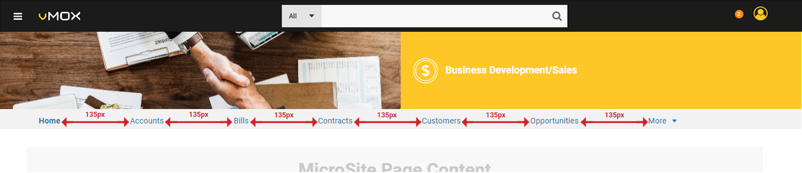
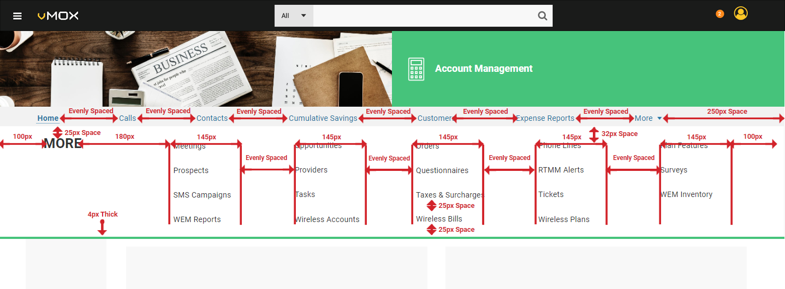
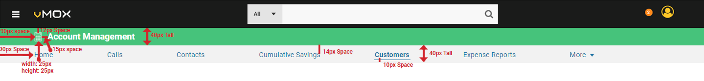
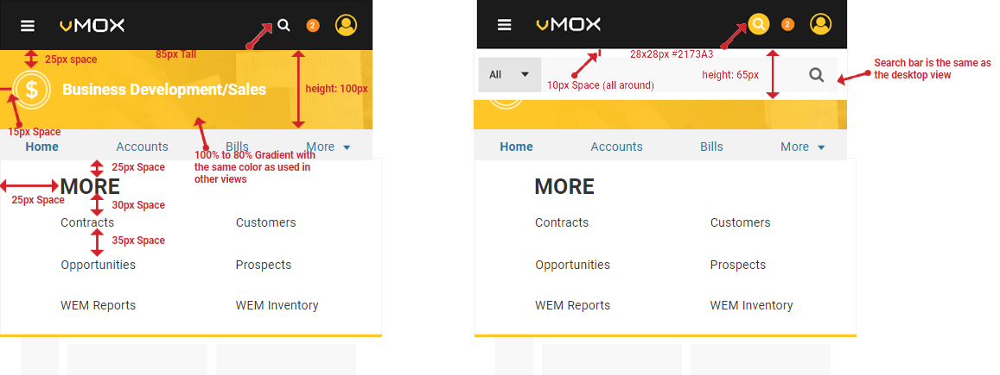

Because No One Ever Said "This Is Too Easy To Understand"
vMOX Navigation Header 2.0
Created June 15 2018
Composed by Craig Graham
Key Points - Navigation 2.0
- Was designed to reinforce micro site mental model and is based on our card sort study results, which can be found at vMOX Card Sort Study Results
- Users will be directed to their role's microsite upon log in and have the ability to navigate to other microsites as needed.
- Mockup can be viewed at: vMOX Navigation 2.0 Mockup
Based on the results of the vMOX Navigation Card Sort Study we determined that most of our users would organize the navigation options based by role. This suggested that users would relate to a microsite layout where the user is directed to a role-based experience upon log in. In order to support this we needed to develop a new navigation scheme that seperates the different roles into their own microsites.
Navigation Links - Style Suggestions
The vMOX Navigation 2.0 header has two different views: Microsite Homepages and Microsite Content Pages. The first view we will cover is the Microsite Homepage, which is the view the user will be presented with when they are on the homepage for a particular role.
The homepage view has a banner that is 50% image and 50% banner, followed by a navigation bar located directly below the banner. The number of links displayed in the navigation bar is determined by the amount of horizontal space it has been allocated by the viewport. For example the mockup is 1600px wide and there are seven eventually spaced links. The space between them is determined by the length of the links. For example the first screen shot shows a menu where the links are 135px apart in order to be equally spaced and the second mockup shows the links spaced at 120px apart in order to be equally spaced.
vMOX Navigation Bar Spacing
 View MockupvMOX Navigation Bar Spacing II
View MockupIf there are more links then will fit in the navigation bar then those links are put into the "More" dropdown menu. This menu is accessed by clicking on the "More" which acts as a toggle (both hiding and showing the menu). If the user selects a link in the "More" menu then "More" becomes bold and underlined in the Navigation Bar and the link selected in the "More" menu is also bolded and underlined.
More Menu (Link Overflow Area)
 View MockupHompage Banners - Style Suggestions
When the user visits the homepage of one of the roles (accessed from the role hamburger located at the top left of the header) we will present them with the larger banner, complete with photo. This is the only page that this header will be displayed on. The photo should not be stretched or skewed in order to make it fit within the 50% space it is allocated. Instead it should slide behind the solid color div to the right as the viewport width changes. To find the appropriate color codes please visit the vMOX colors page. For the images used in the header, please go to the referenced images/icons section below on this page.
Homepage Header
View MockupStandard Banner - Style Suggestions
Any other page the user visits they will be presented with our more minimalist standard header. This header is a simple 40px tall header with an icon and the name of the role the user is currently viewing the page as. All the links and the menus will interact the same way.
Standard Header
 View MockupFlyout Global Menu
The menu flyout is how the user can switch the role microsite they are currently viewing. The flyout should appear by sliding out from the left, with the animation lasting no more than 300ms. The flyout should close when the user clicks on a link within the flyout menu or when the user click anywhere on the screen which is not the flyout itself. Each link is 50px tall and should be highlighted in #F2F2F2 with a text color of #2173A3 (link blue). The "Home" link should take the user to the global homepage, the page above the role level. As the viewport width changes the flyout menu does not change.
Flyout Menu
View MockupTop Navigation Bar
The Top Navigation Bar is a sticky/fixed positioned bar which is used to give the user quick access to search, alerts and the global role menu at all times. The navigation bar has a #1A1B1A background with no border.

Video Walk-Through
This video shows the navigation with a white background. I apologize for the inconsistency and if it needs to be corrected, please let me know.
Responsive Design
Tablet
When the user views the navigation from a tablet, little should change. The homepage header, standard header, search bar and navigation bar will all display the same as they do on a desktop. The only change is how many navigation links we will display to the user in the navigation bar.
Tablet View - Homepage Header
View MockupTablet View - Standard Header
View MockupMobile
As the user views the navigation on smaller viewports there are a few changes that we must make to accommodate the limited horizontal space. The first is that we hide the search bar in a toggle button that would display a second header containing the search bar. The search bar is styled exactly the same way as it is in the desktop view, it is just hidden until the user toggles it on. The next change that is made to the design is to move the image banner to be a single div that has a color overlay. This overlay is a 100% to 80% (left to right) gradient that uses the same accent color as the desktop version of the design for that role microsite did. The final change is that the dropdown "e;More" menu is rearranged to optimize it for the smaller view.
Mobile View Design Changes
 View MockupShould the user be viewing the navigation from a very small viewport, such as a portrait orientated smart phone there is one final change made the design. In this case we want to limit how much vertical space the homepage header takes so the user does not feel overwhelmed by the header on first glance.
Very Small (less than 380px wide) Mobile View Design Changes
View MockupRelated Icons & Images


Similar Components
No Similar Components at This Time....